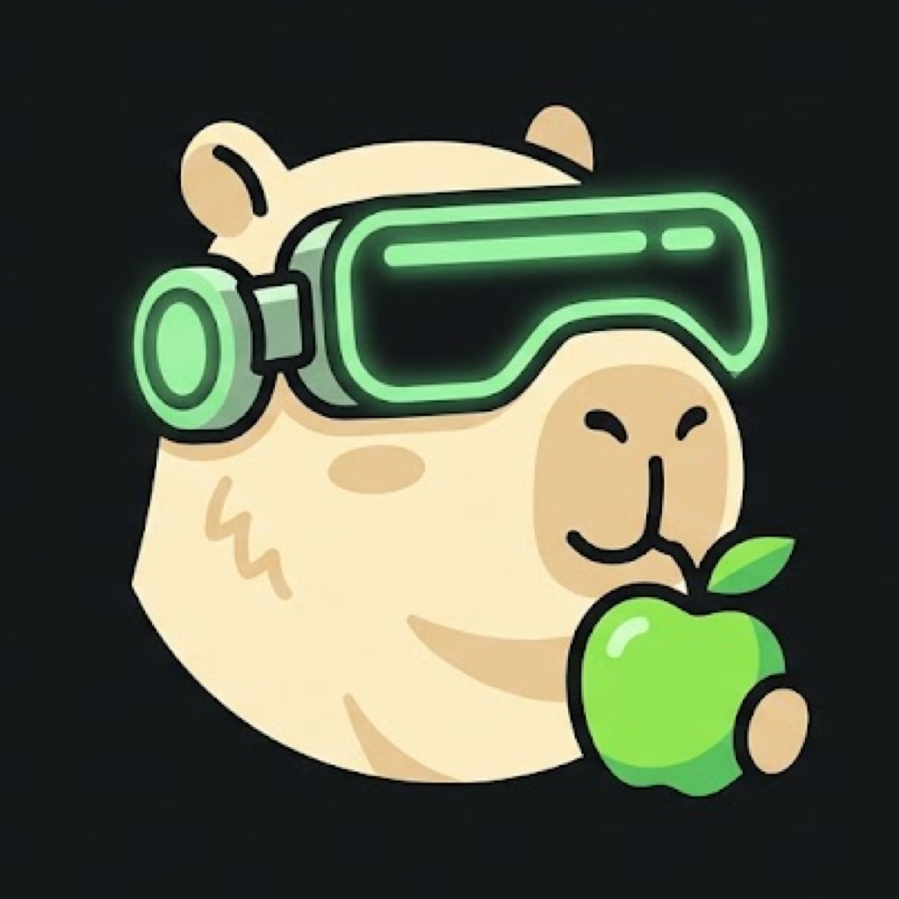
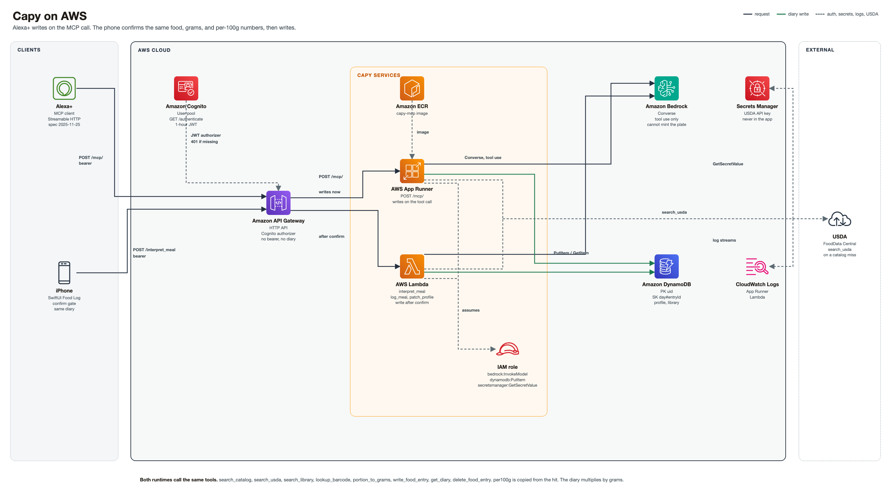

1
The meal
Hands are busy. The meal is one sentence. Two eggs and rice.

A food log you talk to.
You say what you want. Capy finds a meal that fits what you have left, and that you will actually eat. The diary fills in behind that.
People want to stay fit and healthy. What they lack is a clear picture of the daily actions that get them there.
Food tracking is one of those actions. The tools that offer it make the action harder than the meal.
A search box. A barcode. A diet plan that expires in a week.
People chase the plan, miss the day, and decide they failed.
Hands are busy. The meal is one sentence. Two eggs and rice.
You stop cooking. Each food is a lookup. A barcode, if you are lucky.
The portion is a number you invent. You hope the calories are real.
“I only ate half” has no line underneath it that came from the food.
The plan was Monday. The log is blank by Wednesday.
You say the meal, or you ask what fits. Capy looks the food up, turns the portion you named into grams, and writes one line with that food’s own calories and macros.
The reply names what was logged, and what is left. Calories, protein, carbs, and fat.
A second food is a second line. “I only ate half” reads today and replaces that one entry.
Ask what fits. The budget is the ceiling. The plate is something you would eat.
The model is not allowed to skip them with a made-up plate.
Or search_usda, search_library, lookup_barcode. A saved meal matches the title. “Chicken” is not “Sunday Chicken Feast.”
Uses the measures on that hit. An unknown unit comes back unmapped. Capy does not invent 100 grams for a whole plate.
Name, grams, and per 100 g copied from the hit. The diary multiplies. An edit is get_diary, then the same write with that entry’s id.
The same tools that log a meal on the phone. You ask for a meal. You stay in budget. You eat something you like. The log is already written.
MCP · Streamable HTTP · spec 2025-11-25
POST /mcp/
No bearer, no diary.
The first write waits until you confirm that food, those grams, and those numbers. The Food Log is the same diary.
interpret_meal
Same tools. Same record.
Write only after confirm.
Alexa+ and the phone share one diary. The front door checks the bearer. The tools write the line. The diary multiplies grams by that food’s own numbers.

One diary. Two doors.